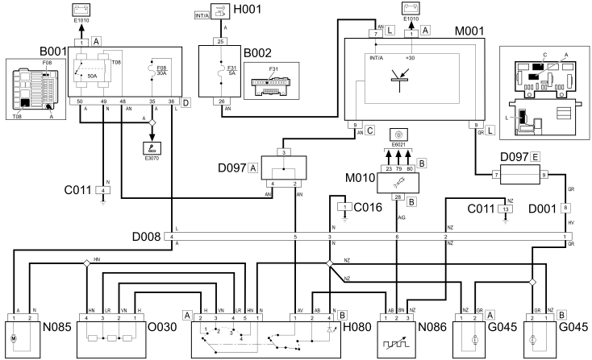

E6020 AIR CONDITIONING - Wiring diagram
- Path
- Electrical equipment > 1 ELECTRICAL FUNCTIONS > E60 Climate control system > E6020 AIR CONDITIONING > E6020 AIR CONDITIONING - Wiring diagram
- Kind
- wiring diagram
- Applies to
- engines: 1.3 JTD 16v; all production periods; only with equipment: Manual Air Conditioning
- Interactive page
- https://sloeber94.github.io/elrnDB-fPnd/en/#/2751611
Applies to: engines: 1.3 JTD 16v; all production periods; only with equipment: Manual Air Conditioning
Wiring diagram

COMPONENTS
Component code | Name | Assembly reference |
|---|---|---|
Engine compartment junction unit | ||
engine compartment junction unit | ||
Junction unit under dashboard | ||
Right front earth | - | |
Air conditioning earth | - | |
Front dashboard coupling | - | |
Front / dashboard coupling | - | |
front / dashboard coupling | - | |
Front / air conditioning - heater coupling | - | |
Front coupling air conditioner with heating | - | |
Front coupling / air conditioner - with heating | - | |
Dashboard air conditioner heater connection | - | |
Dashboard / air conditioner - heater connection | - | |
Short circuiting coupling | - | |
Air conditioning heater controls light | - | |
Air conditioning / heater controls light | - | |
Ignition switch | ||
Climate control system controls | - | |
Frost sensor | ||
Lower mixed air temperature sensor | ||
Upper mixed air temperature sensor | ||
Body computer | ||
Engine management control unit | - | |
Engine management control unit | ||
Engine management control unit | ||
Climate control system control unit | ||
Air distribution flap actuator | ||
Air mixture flap actuator | ||
Outside recirculation air intake flap actuator | ||
Outside / recirculation air intake flap actuator | ||
Passenger compartment ventilation fan | ||
Passenger compartment ventilation fan | ||
Electronic thermostat | - | |
Air fan adjustment resistance | - | |
Air fan adjustment resistance | ||
Air fan adjustment resistor | - | |
Air fan adjustment resistor |
Topics linked from this page (33)
- 1056B multi-point injection system (mpi)
- 1060G pressure pump electric control
- 5010D air temperature recording system
- 5020A box and components
- 5040B system safety check devices
- 5040C air conditioner box and components
- 5040D air conditioner controls
- 5505A multi-function components
- 5505C vehicle compartment wiring
- 5520A ignition switch
- B001 JUNCTION UNIT
- B002 JUNCTION UNIT UNDER DASHBOARD
- C011 RIGHT FRONT EARTH
- C016 AIR CONDITIONING UNIT EARTH
- D001 FRONT/DASHBOARD COUPLING
- D008 AIR CONDITIONING-HEATER FRONT COUPLING
- D021 DASHBOARD/AIR CONDITIONING-HEATER COUPLING
- D097 SHORT CIRCUITING COUPLING
- G045 AIR CONDITIONING/HEATER CONTROLS LIGHT
- H001 IGNITION SWITCH
- H080 AIR CONDITIONING CONTROLS
- K086 FROST SENSOR
- K087 LOWER MIXED AIR TEMPERATURE SENSOR
- K088 UPPER MIXED AIR TEMPERATURE SENSOR
- M001 BODY COMPUTER
- M010 ENGINE MANAGEMENT ECU
- M070 CLIMATE CONTROL SYSTEM CONTROL UNIT
- N080 AIR DISTRIBUTION FLAP ACTUATOR
- N081 MIXTURE FLAP ACTUATOR
- N082 OUTSIDE / RECIRCULATION AIR INTAKE FLAP ACTUATOR
- N085 PASSENGER COMPARTMENT AIR FAN
- N086 ELECTRONIC THERMOSTAT
- O030 PASSENGER COMPARTMENT AIR FAN ADJUSTMENT RESISTOR